전기기능사 (2003-01-26 기출문제)
1과목: 전기 이론
1. 정전흡인력에 대한 설명이다. 옳은 것은?
- 정전흡인력은 전압의 제곱에 비례한다.
- 정전흡인력은 극판 간격에 비례한다.
- 정전흡인력은 극판 면적의 제곱에 비례한다.
- 정전흡인력은 쿨롱 법칙으로 직접 계산된다.
(정답률: 68%)

2. 0.2[㎌]의 콘덴서에 20[μc]의 전하가 공급 되었다면 전위차[V]는?
- 50
- 60
- 80
- 100
(정답률: 63%)
3. 단면적 A[m2], 자로의 길이 ℓ [m], 투자율 μ, 권수 N회인 환상 철심의 자체 인덕턴스의 식은 다음 중 어느 것인가?
- μ A N2/ℓ
- A ℓ N2/4π μ
- 4π A N2/ℓ
- μ ℓ N2/A
(정답률: 46%)
4. 자기 인덕턴스가 L1, L2 상호 인덕턴스 M, 결합계수가 1일때의 관계는 다음 중 어느 것인가?
- L1 L2 = M
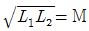
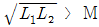
- L1 L2 ＞ M
(정답률: 78%)
5. 1[W.S]와 같은 것은?
- 1[J]
- 1[㎏-m]
- 1[K-㎈]
- 860[㎾H]
(정답률: 76%)
6. 상전압이 173[V]인 3상평평 Y결선인 교류전압의 선간전압의 크기는 약 몇[V]인가?
- 173
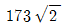
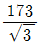
- 300
(정답률: 40%)
7. e = 10 sin ω t + 20 sin(3ω t + 60)인 교류전압의 실효치는 몇[V]인가?
- 약 21.2
- 약 15.8
- 약 22.4
- 약 11.2
(정답률: 34%)
8. 어떤 도체의 길이를 2배 하고 단면적을 1/2로 했을 때의 저항은 원래 저항의 몇배가 되는가?
- 2배
- 4배
- 8배
- 16배
(정답률: 74%)
9. 서로 다른 금속으로 폐회로를 만들고 두 접점을 상이한 온도로 유지시키면 전류가 흐르는데 이 현상을 무엇이라고 하는가?
- 열전현상
- 표피현상
- 과도현상
- 발열현상
(정답률: 72%)
10. 100[V], 1[㎾]의 전열기의 저항[Ω]은?
- 10
- 20
- 30
- 40
(정답률: 86%)
11. LC병렬 공진회로에서 ∞가 되는 것은?
- 임피던스
- 어드미턴스
- 전압
- 전류
(정답률: 50%)
12. 자계의 세기 4[AT/m]의 자계속에 5×10-5[Wb]의 자극을 놓았을 때 작용하는 힘의 크기는 얼마인가?
- 2 × 10-4[N]
- 20 × 10-4[N]
- 3 × 10-4[N]
- 30 × 10-4[N]
(정답률: 55%)
13. 다음중 저항값이 클수록 가장 좋은 것은?
- 접지저항
- 도체저항
- 절연저항
- 접촉저항
(정답률: 73%)
14. 발전기의 유도기전력의 방향을 나타내는 것은?
- 패러데이의 법칙
- 오른나사의 법칙
- 렌쯔의 법칙
- 플레밍의 오른손 법칙
(정답률: 74%)
15. 자기 차폐와 가장 관계가 깊은 것은?
- 상 자성체
- 강 자성체
- 비투자율이 1인 자성체
- 반 자성체
(정답률: 50%)
16. ( )안에 들어갈 적당한 말은?
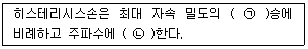
- ㉠:1.6, ㉡:비례
- ㉠:1.2, ㉡:비례
- ㉠:1.2, ㉡:반비례
- ㉠:1.6, ㉡:반비례
(정답률: 51%)
17. 용량이 큰 콘덴서를 만들기 위한 방법이 아닌 것은?
- 극판의 면적을 작게 한다.
- 극판 간의 간격을 작게 한다.
- 극판 간에 넣는 유전체를 비유전율이 큰 것으로 사용한다.
- 극판의 면적을 크게 한다.
(정답률: 61%)
18. 교류 회로에서 유도 리액턴스는 어떤 역할을 하는가?
- 전류를 잘 흐르게 한다.
- 전류의 위상을 90° 빠르게 한다.
- 전류의 위상도 전압보다 π/2 [rad]만큼 뒤지게 한다.
- 전압의 위상을 45° 늦게 한다.
(정답률: 64%)
19. 4심 코드에는 다음과 같은 색이 있는데 그중 접지선에 사용되는 색은?
- 녹색
- 백색
- 흑색
- 적색
(정답률: 64%)
20. 인입용 비닐 절연 전선의 약호는?
- VV
- CV
- DV
- MI
(정답률: 72%)
2과목: 전기 기기
21. 합성수지제 가요관(CD관)의 치수에서 굵기(관의호칭)가 아닌 것은?
- 14
- 22
- 36
- 43
(정답률: 60%)
22. 설비 용량이 2[KW]의 주택에서 최대 수용전력이 600[W]였을때 수용률[%]은?
- 27.5
- 30
- 125
- 275
(정답률: 61%)
23. 풀박스에 대한 설명 중 옳지 않은 것은?
- 박스내에 물기가 스며들 우려가 없도록 해야 한다.
- 전선의 교체나 접속을 쉽게 할 수 있도록 충분한 여유가 있는 장소에 있어야 한다.
- 공사상 부득이한 경우에는 방수형의 박스를 사용할 수 있다.
- 박스는 조영재에 은폐시켜 시공한다.
(정답률: 68%)
24. 한가닥의 지름이 2.6[mm]인 19가닥 연선의 공칭 단면적[mm2] 은?
- 100
- 170
- 200
- 280
(정답률: 31%)
25. 계전기에 관한 기호중 과전압 계전기의 기호는?
- OV
- VC
- S
- CL
(정답률: 54%)
26. 굵은 전선을 절단할때 주로 쓰이는 공구의 이름은?
- 파이프카터
- 토오크렌치
- 녹 아웃트펀치
- 클리퍼
(정답률: 71%)
27. 토지의 상황이나 기타 사유로 인하여 보통지선을 시설할 수 없을 때 전주와 전주간에 또는 전주와 지주간에 시설할 수 있는 지선은?
- 보통지선
- 수평지선
- Y지선
- 궁지선
(정답률: 50%)
28. 무대, 영사실, 기타 사람이나 무대도구가 접촉될 우려가 있는 장소에 시설하는 저압옥내 배선은 사용전압이 몇[V]미만 이어야 하는가?
- 220[V]
- 300[V]
- 400[V]
- 440[V]
(정답률: 75%)
29. 괄호속에 가장 알맞은 것은? (단, 특수한 경우는 제외한다.)
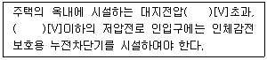
- 100, 200
- 60, 150
- 150, 300
- 110,150
(정답률: 56%)
30. A종 철근 콘크리트주의 전장이 15[m]이고 설계하중이 700[㎏]이하인 경우 전주의 표준근입 깊이[m]는?(관련 규정 개정전 문제로 여기서는 기존 정답인 4번을 누르면 정답 처리됩니다. 자세한 내용은 해설을 참고하세요.)
- 1.4
- 1.5
- 2.0
- 2.5
(정답률: 72%)
31. 단상 교류 부하에 역률을 측정하는데 필요한 계기로만 묶인 것은?
- 전압계, 전류계, 절연 저항계
- 주파수계, 전압계, 전력계
- 전압계, 전류계, 회로계
- 전압계, 전류계, 전력계
(정답률: 50%)
32. 철근 콘크리트 전주에 주상변압기를 고정할 때 사용하는 것은?
- 행거 밴드
- 암 밴드
- 지선 밴드
- 암타이 밴드
(정답률: 63%)
33. 심야전력기기의 전원 공급과 차단은 어떤 장치에 의하여 조정되는가?
- 타임스위치
- 근접스위치
- 셀렉타스위치
- 누름버턴스위치
(정답률: 66%)
34. 과전류 차단기를 시설하여야 하는 장소는?
- 접지 공사의 접지선
- 다선식 전로의 중성선
- 제2종 접지공사를 한 저압 가공전로의 접지선
- 3상 3선식의 저압선측
(정답률: 49%)
35. 가공 전선로의 지지물을 지선으로 보강하여서는 안되는 것은?
- 목주
- A종 철근콘크리트주
- B종 철근콘크리트주
- 철탑
(정답률: 69%)
36. 배전 변압기의 2차측을 접지공사를 하는 이유는?
- 전류 변동의 방지
- 전압 변동의 방지
- 전력 변동의 방지
- 고저압 혼촉 방지
(정답률: 62%)
37. 굵기가 다른 절연전선을 동일 금속관내에 넣어 시설하는 경우에 전선의 절연피복물을 포함한 단면적이 관내 단면적의 몇 [%]이하가 되어야 하는가?
- 25
- 32
- 45
- 70
(정답률: 62%)
38. 금속관을 구부릴때 금속관의 단면이 심하게 변형되지 아니하도록 구부려야 하며, 그 안측의 반지름은 관 안지름의 몇배 이상이 되어야 하는가?
- 6
- 8
- 10
- 12
(정답률: 75%)
39. 저압,고압및 특별고압수전의 3상 3선식 또는 3상 4선식에서 설비불평형률을 몇 [%]이하로 하는 것을 원칙으로 하는가?
- 10
- 20
- 30
- 40
(정답률: 35%)
40. 진동이 있는 기계 기구의 단자에 전선을 접속할 때 사용하는 것은?
- 압착단자
- 스프링 와셔
- 십자머리 볼트
- 납땜 접속
(정답률: 78%)
3과목: 전기 설비
41. 전선을 접속하는 방법 중 적당하지 않은 것은?
- 슬리브를 사용했기 때문에 납땜을 안했다.
- 납땜 후 남은 페이스트를 닦는다.
- 테이프를 감는 두께는 전선 피복의 두께보다 얇게 했다.
- 테이프를 감을 때 편조를 감지 않도록 주의했다.
(정답률: 63%)
42. 사용 전압이 400[V] 이상인 전선관, 금속덕트 공사의 금속부분의 접지공사는?
- 제1종 접지공사
- 제2종 접지공사
- 특별 제3종 접지공사
- 제3종 접지공사
(정답률: 71%)
43. 변성기의 저압측 부하를 무엇이라 하는가?
- 부담
- 용량
- 하중
- 전력
(정답률: 35%)
44. 피뢰기의 제한전압이란?
- 피뢰기의 평균전압
- 피뢰기의 파형전압
- 피뢰기 동작 중 단자전압의 파고치
- 뇌전압의 값
(정답률: 53%)
45. 소호리액터의 용량은?
- 3선 일괄의 대지충전용량과 같다.
- 선간충전용량과 같다.
- 1선과 중성점사이의 충전용량과 같다.
- 선간충전용량의
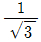
배이다.
(정답률: 34%)
46. 동작전류의 값이 적을수록 동작시한이 길고, 전류가 커질수록 시한이 짧은 계전기는?
- 순한시성계전기
- 정한시성계전기
- 반한시성계전기
- 반한시성.정한시성계전기
(정답률: 54%)
47. 수차발전기에서 가장 많이 채용되고 있는 냉각방식은?
- 개방형
- 폐쇄통풍형
- 전폐형 공기순환형
- 전폐형 수소순환형
(정답률: 37%)
48. 최대수용전력이 50㎾인 수용가에서 하루의 소비전력이 600kWh이다. 일부하율은 몇 % 인가?
- 50
- 65
- 80
- 95
(정답률: 33%)
49. 그림과 같은 3상3선식의 송전선에서 수직으로 배열된 전선 배열에서의 선간거리는 몇 m 가 되겠는가?
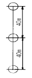
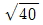
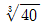
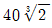
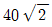
(정답률: 48%)
50. 무부하시 수전단 전압이 송전단 전압보다 높아지는 현상은?
- 전자유도현상
- 정전유도현상
- 페란티현상
- 도플러현상
(정답률: 59%)
51. 송전전력, 송전거리, 전선로의 전력손실 등이 일정하고 같은 재료의 전선을 사용한 경우에 단상3선식은 단상2선식에 비하여 전선 전체의 무게가 몇 % 정도 되는가? (단, 바깥선과 중성선의 단면적은 같다고 한다.)
- 31.3
- 37.5
- 75
- 100
(정답률: 50%)
52. 전주의 뿌리 받침은 전선로 방향과는 어떤 상태인가?
- 평행이다.
- 직각방향이다.
- 평행에서 45도 정도이다.
- 직각방향에서 30도 정도이다.
(정답률: 33%)
53. 전선을 지지물사이에 가설하면 전선 자체의 무게 때문에 밑으로 쳐져서 곡선을 이루게 되는데 이 곡선을 무엇이라 하는가?
- 현수선 곡선
- 오프셋
- 댐퍼
- 딥
(정답률: 55%)
54. 수차의 공동현상 방지법이 아닌 것은?
- 흡출수두를 증가시킨다.
- 적당한 회전수를 선정한다.
- 재료를 스테인레스강으로 사용한다.
- 손상된 부분을 조속히 수리한다.
(정답률: 51%)
55. 기력발전소의 기본사이클인 랭킨사이클의 P-V선도를 나타낸 그림은?
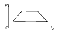
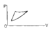
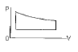
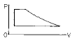
(정답률: 40%)
56. 1기압하에서 물 1kg이 기화할 때 들어가는 잠열은 몇 kcal/kg 정도 되는가?
- 86
- 273.5
- 539.3
- 860
(정답률: 27%)
57. 기력발전소를 운전할 때 예비기를 가장 필요로 하는 것은?
- 터빈발전기의 급유펌프
- 미분탄송입기
- 급탄기
- 압입통풍기
(정답률: 51%)
58. 연도에 시설한 간단한 밸브로 보일러의 통풍을 조절하는 장치는?
- 댐퍼(damper)
- 코킹 아치(coking arch)
- 틸팅 버너(tilting burner)
- 블로우 오프 밸브(blow-off-valve)
(정답률: 42%)
59. 보일러에서 발생한 증기는 과열증기로 만든 다음, 제일 먼저 어느 기관에 공급되는가?
- 터빈
- 복수기
- 재열기
- 공기예열기
(정답률: 52%)
60. 충동수차로서 고 낙차에 사용하는 것은?
- 펠턴수차
- 프란시스수차
- 프로펠러수차
- 카플란수차
(정답률: 37%)